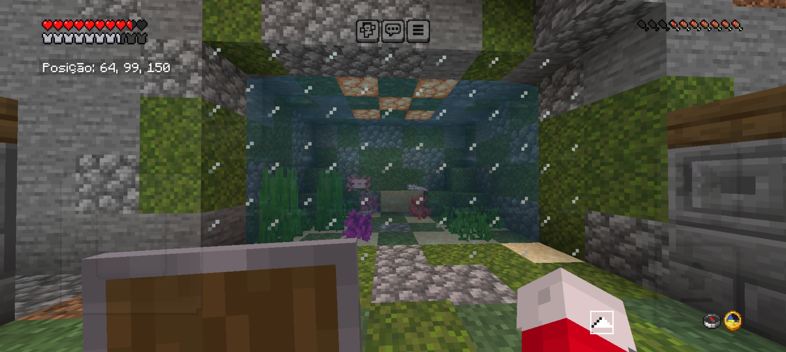
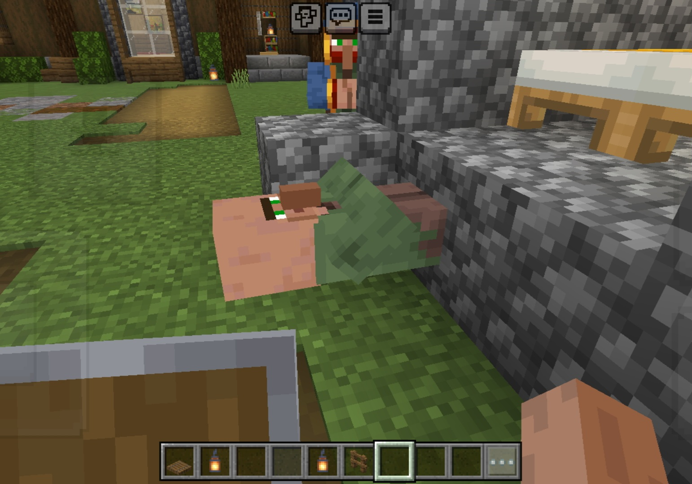
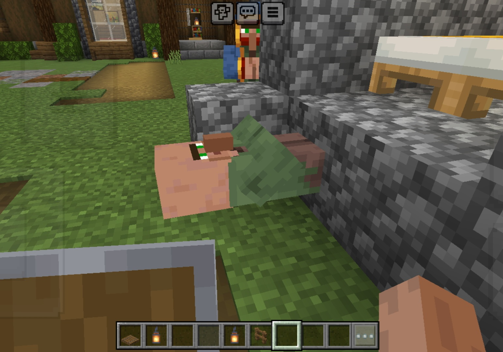
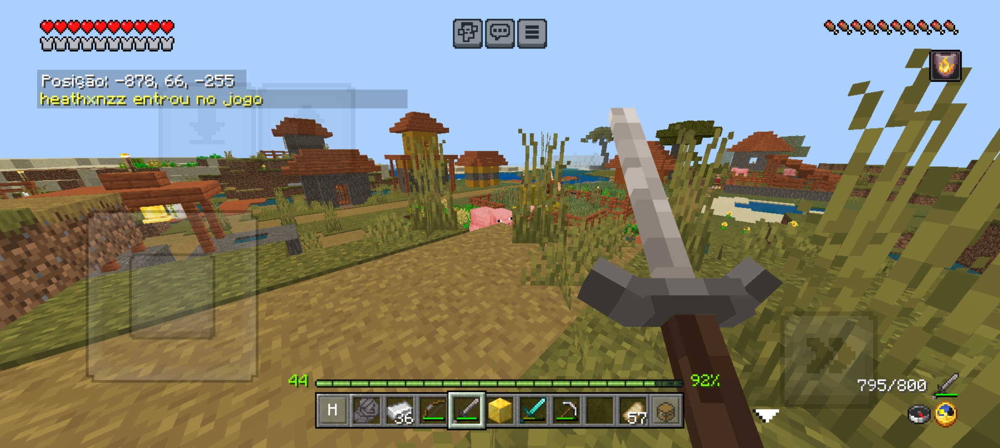
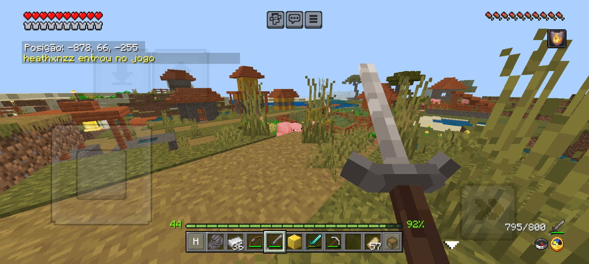
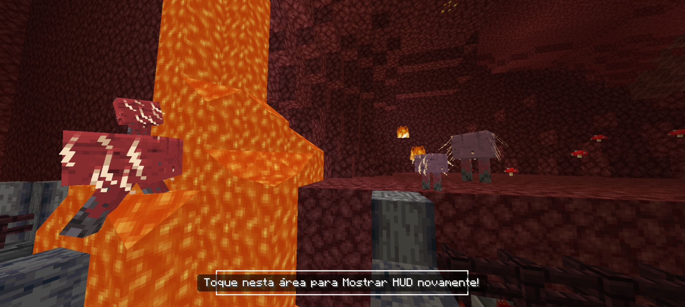
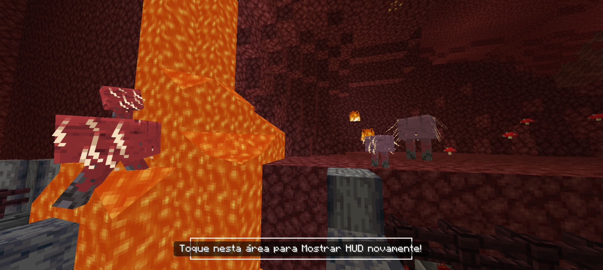

Mural de momentos
Aniversário passado


Codzinho


Minecraft (Primeiro Server Nosso)



 



Minecraft (Segundo Server Nosso)

 



 



The Rake


Backrooms


Roblox


Captivity


Stardew Valley


Eclipse


Bolinhos da Mylezinha


Metadinhas


Música: Kenga 1/4 descalça
Praga Linda da Peste
 Toca o dedinho aqui coisa mais linda!
Toca o dedinho aqui coisa mais linda!